Code
load(here("data/derived/model_comparison.Rdata"))
load(here("data/clean/all_data_clean.Rdata"))
data <- all_data[[1]] %>%
mutate(update = post_adjusted - pre_adjusted) load(here("data/derived/model_comparison.Rdata"))
load(here("data/clean/all_data_clean.Rdata"))
data <- all_data[[1]] %>%
mutate(update = post_adjusted - pre_adjusted) # re order subjects based on their consensus estimate
tmp <- model_comparison %>%
filter(excluded_condition == "contested")
ordered_subjects <- reorder(as.character(tmp$subject), tmp$consensus_estimate)
<<<<<<< HEAD
model_comparison_ind <- model_comparison %>%
filter(excluded_condition == "contested")
ind_param_plot <- model_comparison_ind %>%
ggplot(aes(x = ordered_subjects, y = consensus_estimate, colour = best_model)) +
geom_point(aes(shape = best_model)) +
geom_errorbar(aes(ymin = lower_CI, ymax = upper_CI), width = 0.2) +
labs(title = "Independent Consensus v Dependent Consensus",
x = "Subject (Ordered by Independence Parameter)",
=======
<<<<<<<< HEAD:analyses/analyse_individuals.html
model_comparison %>%
filter(excluded_condition == "contested") %>%
ggplot(aes(x = ordered_subjects, y = consensus_estimate, colour = best_model)) +
geom_point(aes(shape = best_model)) +
geom_errorbar(aes(ymin = lower_CI, ymax = upper_CI), width = 0.2) +
labs(title = "Preference for independence v dependence v no sensitivity",
x = "Subject (ordered by independence parameter)",
y = "Independence Parameter") +
geom_hline(yintercept = 0, colour = "black")+
theme_bw() +
theme(axis.text.x = element_blank(),
axis.ticks.x = element_blank()) 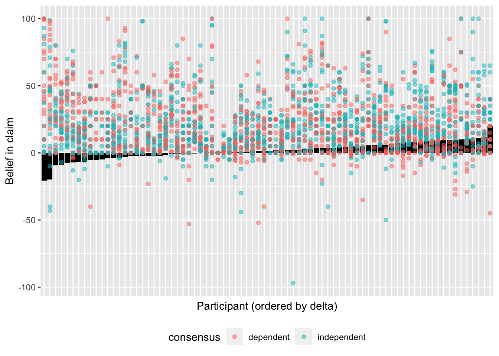
n_independent <- sum(model_comparison_ind$best_model == "Alternative Model" & model_comparison_ind$consensus_estimate > 0)
n_dependent <- sum(model_comparison_ind$best_model == "Alternative Model" & model_comparison_ind$consensus_estimate < 0)
prop_independent <- round((n_independent/nrow(model_comparison_ind)),2)*100
prop_dependent <- round((n_dependent/nrow(model_comparison_ind)),2)*100
prop_alt <- round(sum(model_comparison_ind$best_model == "Alternative Model")/nrow(model_comparison_ind),2)*100# re order subjects based on their consensus estimate
tmp <- model_comparison %>%
filter(excluded_condition == "contested")
ordered_subjects_facet <- rep(ordered_subjects, each = 2)
model_comparison %>%
mutate(excluded_condition = case_when(
excluded_condition == "dependent" ~ "Contested v Independent",
excluded_condition == "contested" ~ "Independent v Dependent"
)) %>%
ggplot(aes(x = ordered_subjects_facet, y = consensus_estimate, colour = best_model)) +
geom_point(aes(shape = best_model)) +
geom_errorbar(aes(ymin = lower_CI, ymax = upper_CI), width = 0.2) +
facet_grid(~excluded_condition)+
labs(title = "Individual Sensitivity to Consensus Effects",
x = "Subject (ordered by independence parameter with contested trials removed)",
y = "Independence Parameter") +
geom_hline(yintercept = 0, colour = "black")+
theme_bw() +
theme(axis.text.x = element_blank(),
axis.ticks.x = element_blank(),
legend.position = "bottom") 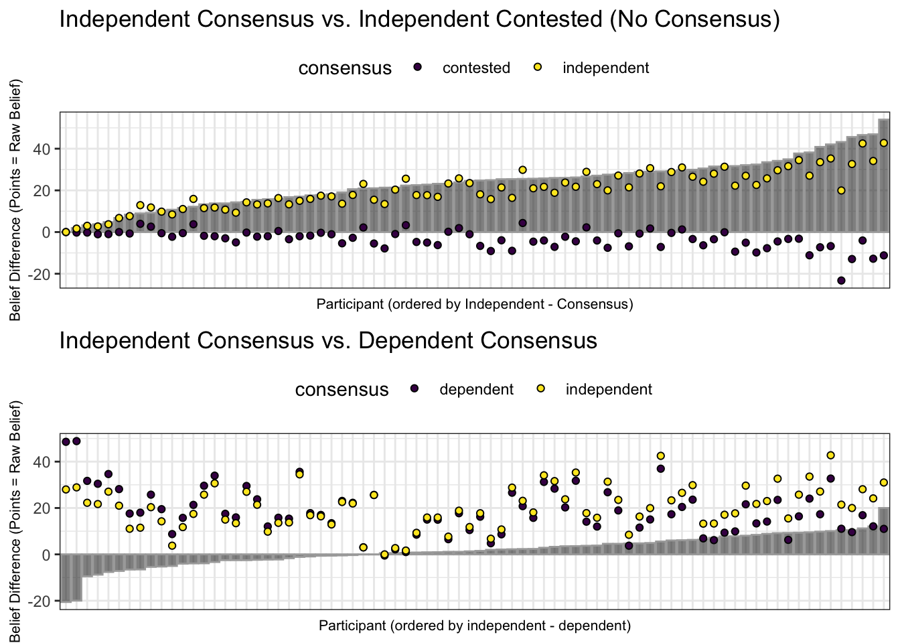
29% of participants were sensitive to independence when reasoning. 8% of participants were more convinced by a dependent consensus where four different people each shared the same source. 22 % of participants were more convinced by an independent consensus where four people shared four different sources.
deltas_independence <- data %>%
filter(consensus != "contested") %>%
pivot_wider(names_from = consensus, values_from = update) %>%
group_by(participant) %>%
summarise(delta = mean(independent, na.rm = TRUE)-mean(dependent, na.rm = TRUE))
# Assuming deltas_independence and d_independence are your data frames
# Get the participant index ordered by delta
delta_order <- order(deltas_independence$delta)
ordered_participants <- deltas_independence$participant[delta_order]
# Make participant a factor which corresponds to the delta order
d_independence <- data %>%
filter(consensus != "contested") %>%
mutate(
participant = factor(participant, levels = ordered_participants)
) %>%
arrange(participant)
# Create the plot
deltas_independence %>%
ggplot(aes(x = factor(participant, levels = ordered_participants), y = delta)) +
geom_col(fill = "black")+
geom_point(data = d_independence, aes(y = update, colour = consensus), alpha = 0.5) +
theme(axis.text.x = element_blank(),
axis.ticks.x = element_blank(),
legend.position = "bottom") 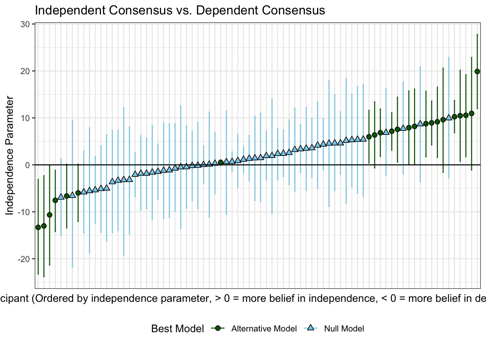
======= <<<<<<<< HEAD:analyses/analyse_individuals.htmldeltas_independence <- data %>%
filter(consensus != "contested") %>%
pivot_wider(names_from = consensus, values_from = update) %>%
group_by(participant) %>%
summarise(delta = mean(independent, na.rm = TRUE)-mean(dependent, na.rm = TRUE))
# Assuming deltas_independence and d_independence are your data frames
# Get the participant index ordered by delta
delta_order <- order(deltas_independence$delta)
ordered_participants <- deltas_independence$participant[delta_order]
# Make participant a factor which corresponds to the delta order
d_independence <- data %>%
filter(consensus != "contested") %>%
mutate(
participant = factor(participant, levels = ordered_participants)
) %>%
arrange(participant)
# Create the plot
deltas_independence %>%
ggplot(aes(x = factor(participant, levels = ordered_participants), y = delta)) +
geom_col(fill = "black")+
geom_point(data = d_independence, aes(y = update, colour = consensus), alpha = 0.5) 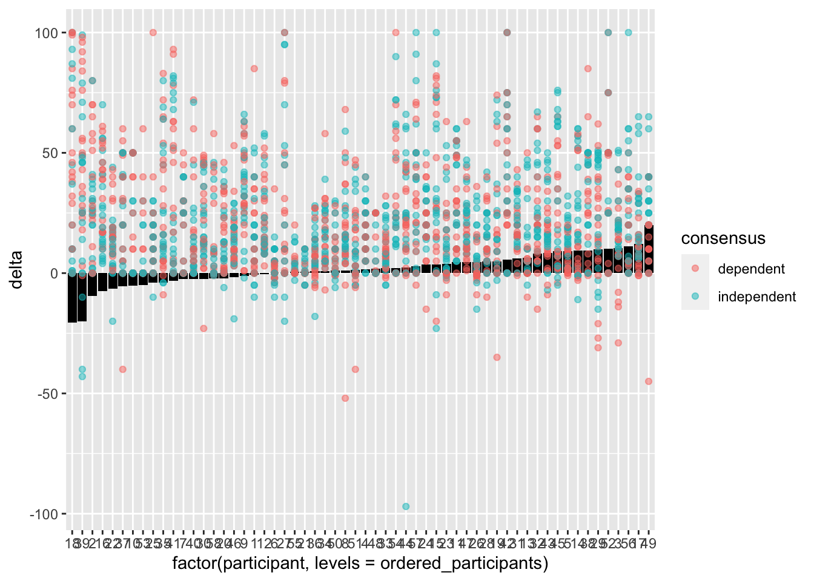
========deltas_independence <- data %>%
filter(consensus != "contested") %>%
pivot_wider(names_from = consensus, values_from = update) %>%
group_by(participant) %>%
summarise(delta = mean(independent, na.rm = TRUE)-mean(dependent, na.rm = TRUE))
# Assuming deltas_independence and d_independence are your data frames
# Get the participant index ordered by delta
delta_order <- order(deltas_independence$delta)
ordered_participants <- deltas_independence$participant[delta_order]
# Make participant a factor which corresponds to the delta order
d_independence <- data %>%
filter(consensus != "contested") %>%
mutate(
participant = factor(participant, levels = ordered_participants)
) %>%
arrange(participant)
# Create the plot
deltas_independence %>%
ggplot(aes(x = factor(participant, levels = ordered_participants), y = delta)) +
geom_col(fill = "black")+
geom_point(data = d_independence, aes(y = update, colour = consensus), alpha = 0.5) +
theme(axis.text.x = element_blank(),
axis.ticks.x = element_blank(),
legend.position = "bottom") deltas_ind_by_session <- data %>%
filter(consensus != "contested") %>%
pivot_wider(names_from = consensus, values_from = update) %>%
group_by(participant, session_number) %>%
summarise(delta = median(independent, na.rm = TRUE)-median(dependent, na.rm = TRUE)) %>%
pivot_wider(names_from = session_number, values_from = delta) deltas_ind_by_session <- data %>%
filter(consensus != "contested") %>%
pivot_wider(names_from = consensus, values_from = update) %>%
group_by(participant, session_number) %>%
summarise(delta = mean(independent, na.rm = TRUE)-mean(dependent, na.rm = TRUE)) %>%
pivot_wider(names_from = session_number, values_from = delta) `summarise()` has grouped output by 'participant'. You can override using the
`.groups` argument.model_comparison_ind$delta_s1 <- deltas_ind_by_session$`1`
model_comparison_ind$delta_s2 <- deltas_ind_by_session$`2`
alt_subs <- model_comparison_ind %>%
filter(best_model == "Alternative Model")
plot(alt_subs$delta_s1, alt_subs$delta_s2)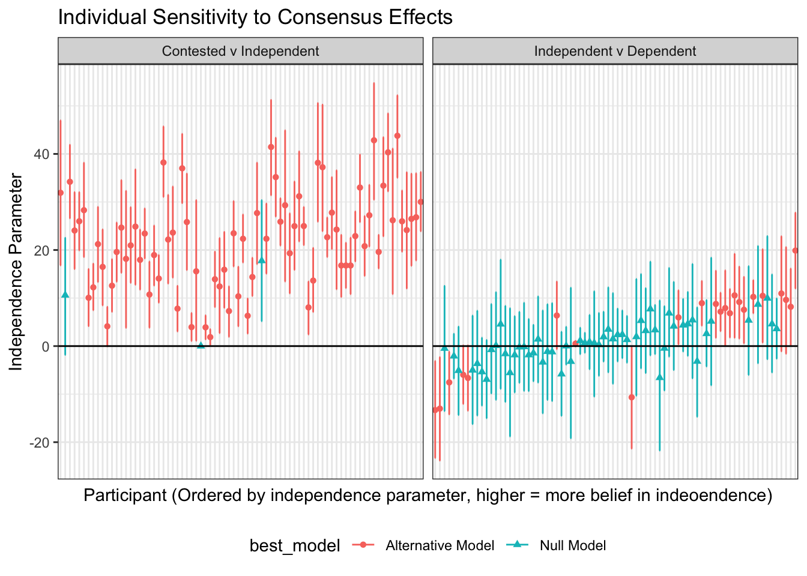
cor(alt_subs$delta_s1, alt_subs$delta_s2)[1] 0.5743557load(here("data/derived/model_comparison_by_session.Rdata"))
alt_participants <- as.vector(as.matrix(model_comparison_ind[model_comparison_ind[,"best_model"] == "Alternative Model","subject"]))
session_estimates <- model_comparison_by_session %>%
pivot_wider(names_from = session_number,values_from = c(looic_null,looic_alt, consensus_estimate, lower_CI, upper_CI, best_model, looic_diff)) %>%
select(subject, consensus_estimate_1, consensus_estimate_2)
session_estimates$best_model_overall <- model_comparison_ind$best_model
# Assuming your data frame is named session_estimates
session_estimates %>%
ggplot(aes(x = consensus_estimate_1, y = consensus_estimate_2, color = best_model_overall)) +
geom_smooth(method = "lm", se = FALSE) +
geom_point() +
#xlim(-20,30)+
labs(title = "Consistency of conseneus independence score from session 1 and 2",
x = "Consensus Estimate 1",
y = "Consensus Estimate 2",
color = "Best Model Overall")`geom_smooth()` using formula = 'y ~ x'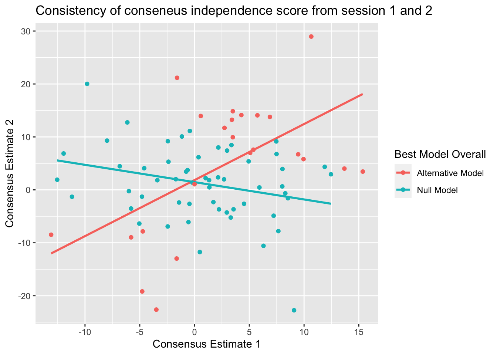
cor_all <- cor.test(session_estimates$consensus_estimate_1, session_estimates$consensus_estimate_2)
session_estimates_alt <- filter(session_estimates, best_model_overall == "Alternative Model")
cor_alt <- cor.test(session_estimates_alt$consensus_estimate_1, session_estimates_alt$consensus_estimate_2)
cor_all
Pearson's product-moment correlation
data: session_estimates$consensus_estimate_1 and session_estimates$consensus_estimate_2
t = 1.1491, df = 76, p-value = 0.2541
alternative hypothesis: true correlation is not equal to 0
95 percent confidence interval:
-0.09460472 0.34322694
sample estimates:
cor
0.1306771 cor_alt
Pearson's product-moment correlation
data: session_estimates_alt$consensus_estimate_1 and session_estimates_alt$consensus_estimate_2
t = 3.0712, df = 21, p-value = 0.005794
alternative hypothesis: true correlation is not equal to 0
95 percent confidence interval:
0.1875682 0.7880776
sample estimates:
cor
0.5567265 # compare_session_delta <- model_comparison %>%
# filter(excluded_condition == "contested") %>%
# mutate(delta_s1 = deltas_ind_by_session$`1`,
# delta_s2 = deltas_ind_by_session$`2`
# )
#
# deltas_ind_by_session$best_model <- model_comparison$best_model
plot(deltas_ind_by_session$`1`, deltas_ind_by_session$`2`)cor(deltas_ind_by_session$`1`, deltas_ind_by_session$`2`)[1] 0.08063471cons_param_plot <- model_comparison %>%
filter(excluded_condition == "dependent") %>%
rename("Best Model" = best_model) %>%
ggplot(aes(x = reorder(as.character(subject), consensus_estimate), y = consensus_estimate, colour = `Best Model`)) +
#ggplot(aes(x = ordered_subjects, y = consensus_estimate, colour = best_model)) +
geom_point(aes(shape = `Best Model`)) +
geom_errorbar(aes(ymin = lower_CI, ymax = upper_CI), width = 0.2) +
labs(title = "Independent Consensus v Independent Contested (No Consensus)",
x = "Subject (Ordered by Consensus Parameter)",
y = "Consensus Parameter") +
geom_hline(yintercept = 0, colour = "black")+
theme_bw() +
theme(axis.text.x = element_blank(),
axis.ticks.x = element_blank(),
legend.position = "bottom")
cons_param_plot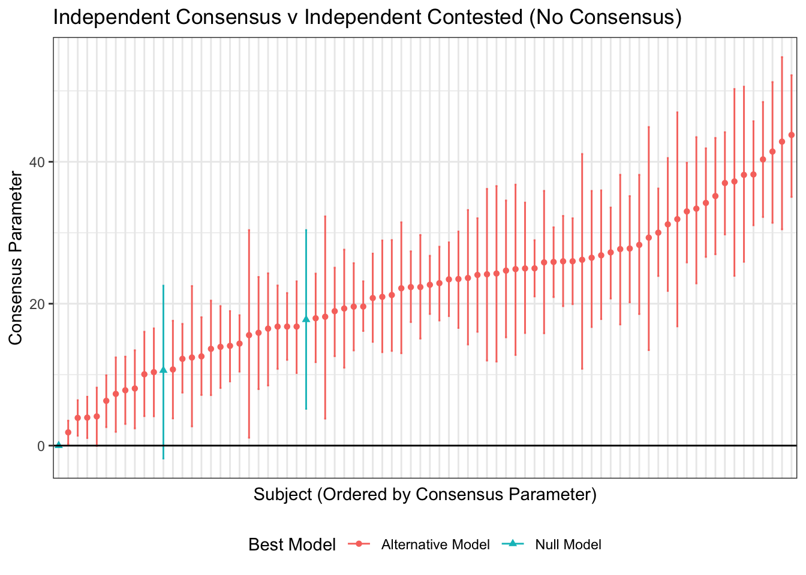
combined_param_plots <- ggarrange(cons_param_plot, ind_param_plot, common.legend = TRUE, ncol = 1, nrow = 2)
combined_param_plots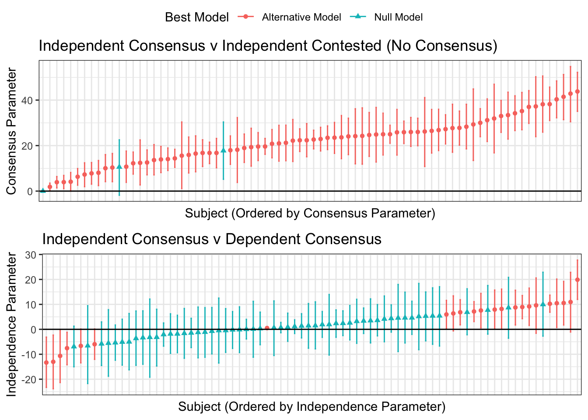
ggsave(plot = combined_param_plots, filename = here("analyses/07_Plots/combined-param-plot.png"), width = 10, height = 5)model_comparison %>%
filter(excluded_condition == "dependent") %>%
ggplot(aes(x = reorder(as.character(subject), consensus_estimate), y = consensus_estimate, colour = best_model)) +
#ggplot(aes(x = ordered_subjects, y = consensus_estimate, colour = best_model)) +
geom_point() +
geom_errorbar(aes(ymin = lower_CI, ymax = upper_CI), width = 0.2) +
labs(title = "Preference for consensus v no preference (contested v independent)",
x = "Subject (ordered by consensus parameter)",
y = "Consensus Parameter") +
geom_hline(yintercept = 0, colour = "black")+
theme_bw() +
theme(axis.text.x = element_blank(),
axis.ticks.x = element_blank()) 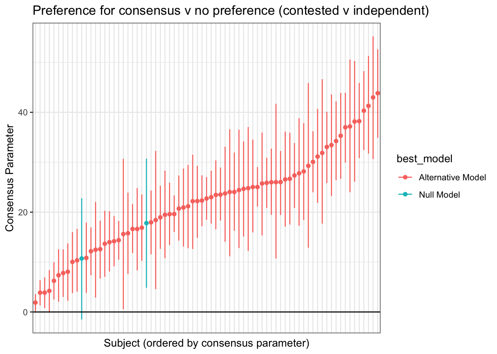
========model_comparison %>%
filter(excluded_condition == "dependent") %>%
ggplot(aes(x = reorder(as.character(subject), consensus_estimate), y = consensus_estimate, colour = best_model)) +
#ggplot(aes(x = ordered_subjects, y = consensus_estimate, colour = best_model)) +
geom_point(aes(shape = best_model)) +
geom_errorbar(aes(ymin = lower_CI, ymax = upper_CI), width = 0.2) +
labs(title = "Preference for consensus v no preference (contested v independent)",
x = "Subject (ordered by consensus parameter)",
y = "Consensus Parameter") +
geom_hline(yintercept = 0, colour = "black")+
theme_bw() +
theme(axis.text.x = element_blank(),
axis.ticks.x = element_blank(),
legend.position = "bottom") Comparing their behavior with their self-reported preference.
self_report <- as.data.frame(all_data[[4]])
# get just the multiple choice anser
self_report_mc <- self_report$self_report_strategy
self_report$subject <- 1:length(self_report[,1])
mc_tally <- table(self_report_mc)
names(mc_tally) <- c("Consensus Only", "Diverse Sources", "None of Above", "No Strategy", "Repeated Sources")
mc_tally_df <- as.data.frame(cbind(names(mc_tally), mc_tally))
colnames(mc_tally_df) <- c("Response", "Count")
mc_tally_df$Response <- factor(mc_tally_df$Response, levels = c("Diverse Sources", "Repeated Sources", "Consensus Only", "No Strategy", "None of Above"))
mc_tally_df %>%
mutate(Count = as.numeric(Count)) %>%
ggplot(aes(x = Response, y = Count, fill = Response)) +
geom_col(color = "darkgreen", size = .5) +
theme_bw() +
theme(legend.position = "none") +
scale_fill_brewer(palette = "Greens")Warning: Using `size` aesthetic for lines was deprecated in ggplot2 3.4.0.
ℹ Please use `linewidth` instead.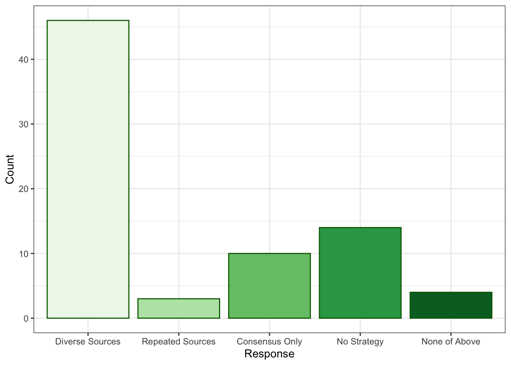
ggsave(filename = here("analyses/07_Plots/self_report.png"), width = 7, height = 7)self_report <- as.data.frame(all_data[[4]])
# get just the multiple choice anser
self_report_mc <- self_report$self_report_strategy
self_report$subject <- 1:length(self_report[,1])
mc_tally <- table(self_report_mc)
barplot(mc_tally)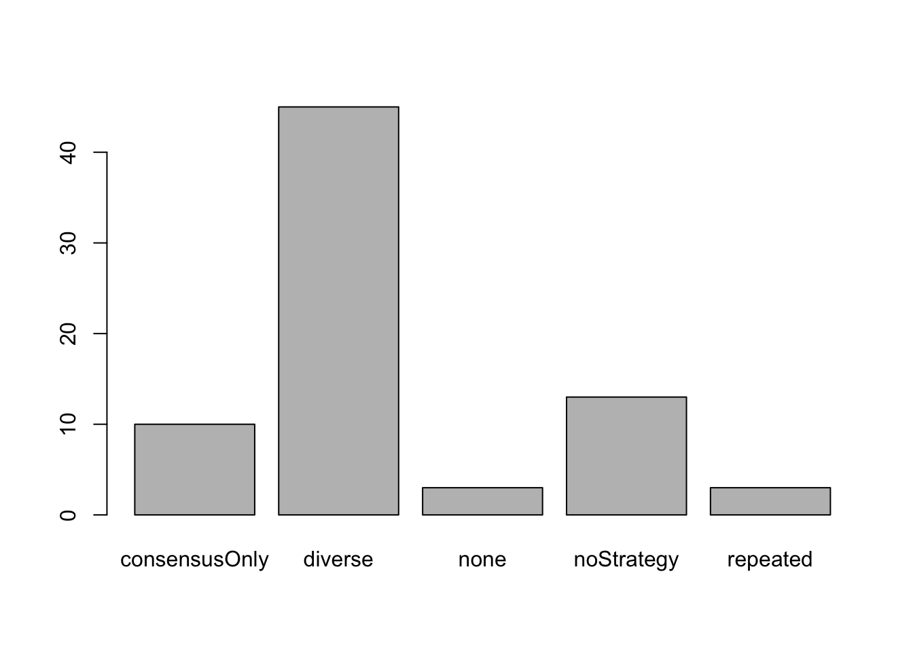
======== >>>>>>>> de0e661 (by session models):analyses/05_analyse_individuals.htmlMost people said they they were more convinced by diverse sources, even though that’s not what their behavior showed!
Could it be that our model comparison is just penalizing too harshly? A lot of people show positive independence estimate in the first figure, even though the for most of them the model comparison preferred the null and the credible intervals were overlapping with zero.
# calculate the proportion of self reported "diverse" participants in the full sample
prop_diverse_full <- sum(mc_tally["diverse"])/sum(mc_tally)
# find participants who at least had a positive consensus parameter estimate
pos_consensus <- model_comparison %>%
filter(consensus_estimate > 0 & excluded_condition == "contested") %>%
mutate(reported_strategy = self_report[self_report$participant == subject,"self_report_strategy"])
# calculate the proportion of self reported "diverse" participants with a positive beta
prop_diverse_pos <- sum(pos_consensus$reported_strategy == "diverse", na.rm = TRUE)/length(pos_consensus$reported_strategy)
# compare both proportions
prop_diverse_comparison <- c(`Full Sample` = prop_diverse_full, `Positive Beta` = prop_diverse_pos)
barplot(prop_diverse_comparison, ylim = c(0,1))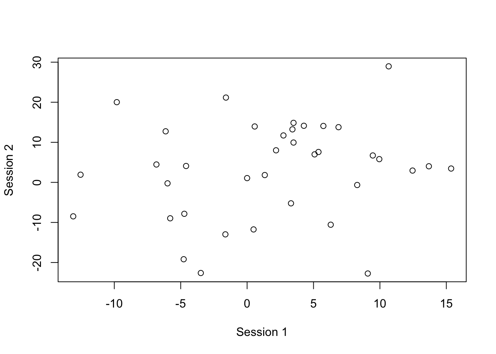
no_consensus_subs <- model_comparison %>%
filter(best_model == "Null Model" & excluded_condition == "dependent") %>%
select(subject) %>%
as.matrix() %>%
as.vector()
model_comparison %>%
filter(subject %in% no_consensus_subs)# A tibble: 6 × 9
# Groups: subject [3]
subject excluded_…¹ consen…² lower_CI upper_CI looic…³ looic…⁴ looic…⁵ best_…⁶
<int> <fct> <dbl> <dbl> <dbl> <dbl> <dbl> <dbl> <chr>
1 48 contested -1.30e+1 -2.38e+1 -2.30e+0 370. 368. 1.25 Altern…
2 48 dependent 1.06e+1 -1.82e+0 2.25e+1 368. 369. -0.947 Null M…
3 56 contested 1.94e+0 -1.03e+1 1.40e+1 377. 380. -2.27 Null M…
4 56 dependent 1.78e+1 5.19e+0 3.04e+1 380. 381. -0.697 Null M…
5 58 contested 5.12e-1 -6.70e-2 1.08e+0 136. 135. 1.03 Altern…
6 58 dependent 7.51e-8 -3.64e-6 3.77e-6 -906. -868. -37.6 Null M…
# … with abbreviated variable names ¹excluded_condition, ²consensus_estimate,
# ³looic_null, ⁴looic_alt, ⁵looic_diff, ⁶best_modelAll of the participants who were insensitive to independence, except one, were sensitive to the standard consensus effect.
Two out of the three participants who did not show any standard consensus effect were sensitive to independence, such that they were more convinced by dependent (repeated) sources. This makes sense since these participants were relatively less persuaded by an independent consensus, which is what the contested (no consensus) condition was compared with to assess the standard consensus effect. It is probable that if we had assessed consensus by comparing the dependent consensus with the contested condition, these participants would have shown a consensus effect. It is interesting however, that for these participants, their preference for repeated, dependent sources appeared not just when compared to an independent consensus, but also when compared to no consensus at all.
Initial thoughts. Behaviorally, a small number of people preferred either repeated or diverse sources, with more people tending towards diversity. Basically everyone showed a general consensus effect (when comparing contested to independent consensus).
======= <<<<<<<< HEAD:analyses/analyse_individuals.html# calculate the proportion of self reported "diverse" participants in the full sample
prop_diverse_full <- sum(mc_tally["diverse"])/sum(mc_tally)
# find participants who at least had a positive consensus parameter estimate
pos_consensus <- model_comparison %>%
filter(consensus_estimate > 0 & excluded_condition == "contested") %>%
mutate(reported_strategy = self_report[self_report$participant == subject,"self_report_strategy"])
# calculate the proportion of self reported "diverse" participants with a positive beta
prop_diverse_pos <- sum(pos_consensus$reported_strategy == "diverse")/length(pos_consensus$reported_strategy)
# compare both proportions
prop_diverse_comparison <- c(`Full Sample` = prop_diverse_full, `Positive Beta` = prop_diverse_pos)
barplot(prop_diverse_comparison, ylim = c(0,1))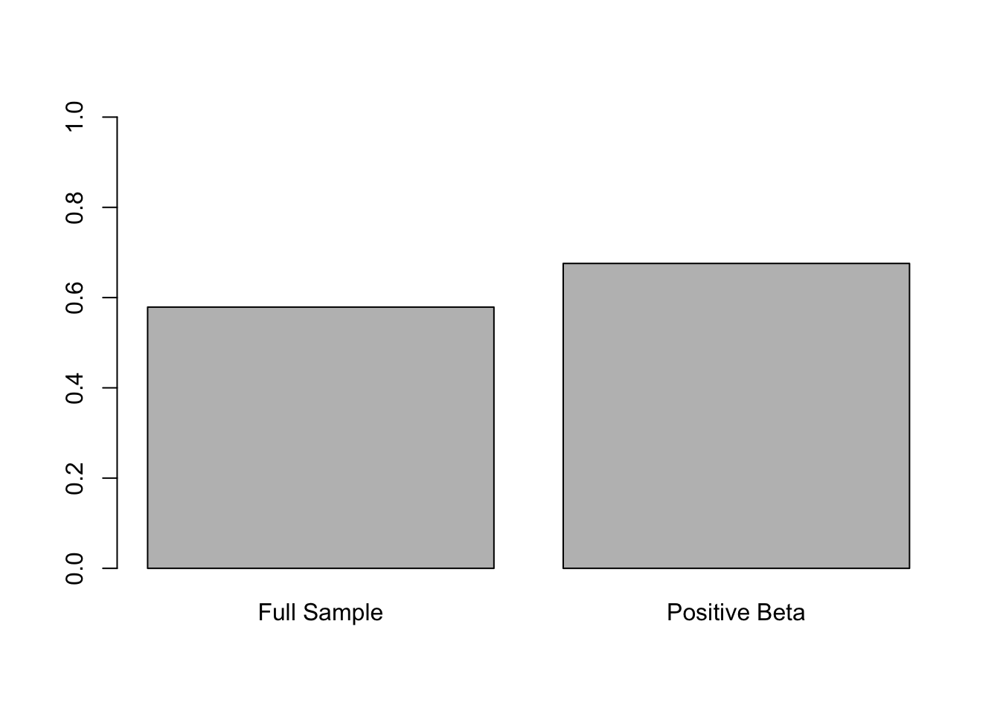
========# calculate the proportion of self reported "diverse" participants in the full sample
prop_diverse_full <- sum(mc_tally["diverse"])/sum(mc_tally)
# find participants who at least had a positive consensus parameter estimate
pos_consensus <- model_comparison %>%
filter(consensus_estimate > 0 & excluded_condition == "contested") %>%
mutate(reported_strategy = self_report[self_report$participant == subject,"self_report_strategy"])
# calculate the proportion of self reported "diverse" participants with a positive beta
prop_diverse_pos <- sum(pos_consensus$reported_strategy == "diverse", na.rm = TRUE)/length(pos_consensus$reported_strategy)
# compare both proportions
prop_diverse_comparison <- c(`Full Sample` = prop_diverse_full, `Positive Beta` = prop_diverse_pos)
barplot(prop_diverse_comparison, ylim = c(0,1))Initial thoughts. Behaviorally, a small number of people preferred either repeated or diverse sources, with more people tending towards diversity. Basically everyone showed a general consensus effect (when comparing comtested to independent consensus).
>>>>>>> de0e661 (by session models)Despite these behavioral results, by far the most common self reported strategy was a preference for diverse sources. A few people said that a consensus was all that they cared about (regardless of independence) and even fewer said that they proffered the same repeated source. This might suggest a lack of insight into what people actually find convincing. It could also suggest our model comparison was too biased towards null results, but an initial investigation suggests that not to be the case.